Exercises
Problem 1: Linear algebra refresher
Look up the topic of vector space in your favorite linear algebra book or search for the term at Wikipedia.
a) Prove that vectors in the plane \( (a,b) \) form a vector space by showing that all the axioms of a vector space are satisfied.
The axioms of a vector space go as follows (see Wikipedia, but we use slightly different notation below):
- The sum of \( u \) and \( v \), denoted by \( u + v \), is in V.
- \( u + v = v + u \).
- \( (u + v) + w = u + (v + w) \).
- There is a zero vector \( 0 \) in V such that \( u + 0 = u \).
- For each \( u \) in V, there is a vector \( -u \) in V such that \( u + (-u) = 0 \).
- The scalar multiple of \( u \) by \( \gamma \), denoted by \( \gamma u \), is in V.
- \( \gamma (u + v) = \gamma u + \gamma v \).
- \( (\gamma + \delta)u = \gamma u + \delta u \) for scalar \( \gamma \) and \( \delta \).
- \( \gamma(\delta u) = \gamma\delta u \).
- \( 1u = u \).
Axiom 1: $$ u+v = (a,b)+(c,d)=(a+c, b+d),$$ is a planar vector and therefore in \( V \).
Axiom 2: $$ u+v = (a,b)+(c,d)=(a+c, b+d) = (c+a, d+b) = v + u\tp$$
Axiom 3: $$ (u+v) + w = ((a,b) + (c,d)) + (e,f) = (a,b) + ((c,d) + (e,f)) = u + (v+w)\tp$$
Axiom 4: The \( (0,0) \) vector is the 0 element, $$ u + 0 = (a,b) + (0,0) = (a+0, b+0) = (a,b) = u\tp$$
Axiom 5: Let \( -u \) element is \( (-a,-b) \), so $$ u + (-u) = (a,b) + (-a,-b) = (0,0) = 0\tp$$
Axiom 6: $$ \gamma u = \gamma\cdot(a,b)= (\gamma a, \gamma b),$$ is also a planar vector and therefore in \( V \).
Axiom 7: $$ \gamma (u + v) = \gamma \cdot((a,b) + (c,d) = \gamma (a,b) + \gamma (c,d)\tp$$
Axiom 8: $$ (\gamma + \delta)u = (\gamma + \delta)(a,b) = \gamma (a,b) + \delta (a,b) = \gamma u + \delta u\tp$$
Axiom 9: $$ \gamma (\delta u) = \gamma (\delta\cdot (a,b)) = \gamma (\delta a, \delta b) = (\gamma\delta a, \gamma\delta b) = \gamma\delta u\tp$$
Axiom 10: $$ 1u = 1(a,b) = (1\cdot a, 1\cdot b) = (a,b) = u\tp$$
b) Prove that all linear functions of the form \( ax+b \) constitute a vector space, \( a,b\in\Real \).
Let \( u=ax+b \) and \( v=cx+d \). We verify each axiom.
Axiom 1: $$ u+v = ax + b + cx + d = (a+c)x + (b + d),$$ is also a linear function and therefore in \( V \).
Axiom 2: $$ u+v = ax+b + cx+ d = cx+d + ax+ b = v + u\tp$$
Axiom 3: $$ (u+v) + w = (ax+b + cx+ d) + ex + f = ax+b + cx+ d + ex + f ax+b + (cx+ d + ex + f) = u + (v+w)\tp$$
Axiom 4: The \( 0x+0=0 \) function is the 0 element, $$ u + 0 = ax + b + 0 = ax + b = u\tp$$
Axiom 5: Let \( -u \) element is \( -ax-b \), so $$ u + (-u) = ax + b + (-ax - b) = 0\tp$$
Axiom 6: $$ \gamma u = \gamma(ax +b)= \gamma ax + \gamma b,$$ is also a linear function and therefore in \( V \).
Axiom 7: $$ \gamma (u + v) = \gamma (ax+b + cx+ d) = \gamma ax + \gamma b + \gamma cx + \gamma d = \gamma(ax + b) + \gamma(cd + d) = \gamma u + \gamma v\tp$$
Axiom 8: $$ (\gamma + \delta)u = (\gamma + \delta)(ax + b) = \gamma (ax+b) + \delta (ax+b) = \gamma u + \delta u\tp$$
Axiom 9: $$ \gamma (\delta u) = \gamma (\delta(ax+b))) = \gamma\delta u\tp$$
Axiom 10: $$ 1u = 1(ax+b) = ax+b = u\tp$$
c) Show that all quadratic functions of the form \( 1 + ax^2 + bx \) do not constitute a vector space.
Let \( u=ax^2+bx + 1 \) and \( v=cx^2 + dx + 1 \). We try to verify each axiom.
Axiom 1: $$ u+v = ax^2 + bx + 1 + cx^2 + dx + 1 = (a+c)x^2 + (b+d)x + 2,$$ but this quadratic function is not in \( V \) because the constant term is 2 and not 1. Consequently, quadratic functions of the particular form \( 1 + ax^2 + bx \) do not constitute a vector space. The more general form \( ax^2 + bx +c \) for arbitrary constants \( a \), \( b \), and \( c \) makes functions that span a function space.
d) Check out the topic of inner product spaces. Suggest a possible inner product for the space of all linear functions of the form \( ax+b \), \( a,b\in\Real \), defined on some interval \( \Omega=[A,B] \). Show that this particular inner product satisfies the general requirements of an inner product in a vector space.
According to Wikipedia, an inner product space, with an inner product \( (u,v) \), has three axioms (we drop the possibility of complex numbers and assume everything is real):
- Symmetry: \( (u,v) \) = \( (v,u) \)
- Linearity in the first argument: \( \gamma u, v) = \gamma (u,v) \)
- Positive-definiteness: \( (u,u)\geq 0 \) and \( (u,u)=0 \) implies \( u=0 \)
Filename: linalg1.
Problem 2: Approximate a three-dimensional vector in a plane
Given \( \f = (1,1,1) \) in \( \Real^3 \), find the best approximation vector \( \u \) in the plane spanned by the unit vectors \( (1,0) \) and \( (0,1) \). Repeat the calculations using the vectors \( (2,1) \) and \( (1,2) \).
We have the vector \( \pmb{f} = (1,1,1) \). Our aim is to approximate this with a vector in the vector-space spanned by the unit vectors \( \pmb{\phi_0} \) and \( \pmb{\phi_1} \). We seek a solution \( u = c_0 \phi_0 + c_1 \phi_1 \). To do this we use the least-square-method and solve the equation \( \pmb{A c} = \pmb{b} \). Or written out: $$ \left[\begin{array}{cc} A_{0,0} & A_{0,1} \\A_{1,0} & A_{1,1} \end{array}\right] \left[ \begin{array}{c} c_0 \\ c_1 \end{array} \right] = \left[ \begin{array}{c} b_0 \\ b_1 \end{array} \right] $$ where \( A_{i,j} = ( \pmb{\phi_i}, \pmb{\phi_j} ) \) and \( b_i = ( \pmb{\phi_i}, \pmb{f} ) \).
We start with \( \pmb{\phi_0} = (0,1) \), \( \pmb{\phi_1} = (1,0) \). Calculations give $$ \begin{align*} A_{0,0} &= ([1,0],[1,0]) = 1,\\ A_{0,1} &= ([1,0],[0,1]) = 0, A_{1,0} &= ([0,1],[1,0]) = 0, A_{1,1} &= ([0,1],[0,1]) = 1, b_0 &= ([1,0],[1,1,1]) = 1, b_0 &= ([0,1],[1,1,1]) = 1. \end{align*} $$ The result becomes $ c_0 = c_1 =1$, and hence $$ u = 1\cdot\pmb{\phi_0} + 1\cdot\pmb{\phi_1}.$$
Then we proceed with \( \pmb{\phi_0} = (2,1) \), \( \pmb{\phi_1} = (1,2) \). Calculations give $$ \begin{align*} A_{0,0} &= ([2,1],[2,1]) = 2\cdot 2 + 1\cdot 1 = 5, A_{0,1} &= ([2,1],[1,2]) = 2\cdot 1 + 1\cdot 2 = 4, A_{1,0} &= ([1,2],[2,1]) = 1\cdot 2 + 2\cdot 1 = 4, A_{1,1} &= ([1,2],[1,2]) = 1\cdot 1 + 2\cdot 2 = 5, b_0 &= ([2,1],[1,1,1]) = 2\cdot 1 + 1\cdot 1 = 3, b_0 &= ([1,2],[1,1,1]) = 1\cdot 1 + 2\cdot 1 = 3. \end{align*} $$ Solving for the \( c_i \) values results in $ c_0 = c_1 =\frac{1}{3}$ and hence $$ u = \frac{1}{3}\cdot \pmb{\phi_0} + \frac{1}{3}\cdot \pmb{\phi_1} .$$
Filename: vec111_approx.
Problem 3: Approximate a parabola by a sine
Given the function \( f(x)=1 + 2x(1-x) \) on \( \Omega=[0,1] \), we want to find an approximation in the function space $$ V = \hbox{span}\{1, \sin(\pi x)\}\tp$$
a) Sketch or plot \( f(x) \). Think intuitively how an expansion in terms of the basis functions of \( V \), \( \baspsi_0(x)=1 \), \( \baspsi_1(x)=\sin(\pi x) \), can be construction to yield a best approximation to \( f \). Or phrased differently, see if you can guess the coefficients \( c_0 \) and \( c_1 \) in the expansion $$ u(x) = c_0\baspsi_0 + c_1\baspsi_1 = c_0 + c_1\sin (\pi x)\tp$$ Compute the \( L^2 \) error \( ||f-u||_{L^2}=(\int_0^1(f-u)^2\dx)^{1/2} \).
If you make a mesh function e of the error
on some mesh with uniformly spaced coordinates in
the array xc, the integral can be approximated as np.sqrt(dx*np.sum(e**2)),
where dx=xc[0]-xc[1] is the mesh spacing and np is an alias for the
numpy module in Python.
The function \( \baspsi_0=1 \) can be used to "take care of" of the constant 1 in \( f \), while \( \baspsi_1=\sin(\pi x) \) can approximate the parabola. The maximum of \( f \) is 3/2, so we should use \( u(x) = 1\cdot\baspsi_0 + \frac{1}{2}\baspsi_1 \).
Plotting and the computation of the \( L^2 \) error can be done by
import numpy as np
import matplotlib.pyplot as plt
xc = np.linspace(0, 1, 101) # x coordinates for plotting
def f(x):
return 1 + 2*x*(1-x)
import sympy as sym
x = sym.symbols('x')
psi_0 = 1
psi_1 = sym.sin(sym.pi*x)
half = sym.Rational(1,2)
u = 1*psi_0 + half*psi_1
# How to combine c_0*psi_0 + c_1*psi_1 to match f?
# Intuitively, c_0=c_1=1...
# Turn u to function so we can plot and compute with it
u = sym.lambdify([x], u, modules='numpy')
print 'L2 error of intuitive approximation:',
e = f(xc) - u(xc)
dx = xc[1] - xc[0]
print np.sqrt(dx*np.sum(e**2))
plt.plot(xc, f(xc), 'r--')
plt.plot(xc, u(xc), 'b-')
plt.legend(['exact', 'intuitive approximation'])
The \( L^2 \) error becomes \( 0.0179 \).

b) Perform the hand calculations for a least squares approximation.
The least squares method ends up with a linear system where the
coefficient matrix has entries \( A_{i,j}=\int_0^1\baspsi_i\baspsi_j\dx \)
and the right-hand side has entries \( b_i=\int_0^1\baspsi_i\dx \).
We can use sympy do carry out the integrals:
# Do the calculations in the least squares or project method
A = sym.zeros((2, 2))
b = sym.zeros((2, 1))
A[0,0] = sym.integrate(psi_0*psi_0, (x, 0, 1))
A[0,1] = sym.integrate(psi_0*psi_1, (x, 0, 1))
A[1,0] = A[0,1]
A[1,1] = sym.integrate(psi_1*psi_1, (x, 0, 1))
b[0] = sym.integrate(f(x)*psi_0, (x, 0, 1))
b[1] = sym.integrate(f(x)*psi_1, (x, 0, 1))
print 'A:', A
print 'b:', b
c = A.LUsolve(b)
c = [sym.simplify(c[i,0]) for i in range(c.shape[0])]
print 'c:', c, [c_.evalf() for c_ in c]
u = c[0]*psi_0 + c[1]*psi_1
print 'u:', u
Looking at the results, we get the linear system $$ \left(\begin{matrix}1 & \frac{2}{\pi}\\\frac{2}{\pi} & \frac{1}{2}\end{matrix}\right) \left(\begin{bmatrix} \frac{- 24 \pi^{2} - 96 + 4 \pi^{4}}{3 \pi^{2} \left(-8 + \pi^{2}\right)}\\ \frac{- 4 \pi^{2} + 48}{3 \pi \left(-8 + \pi^{2}\right)} \end{bmatrix}\right) = \left(\begin{matrix} \frac{4}{3}\\ \frac{8}{\pi^{3}} + \frac{2}{\pi} \end{matrix}\right) $$ The resulting best approximation reads $$ u(x) = \frac{4 \left(- \pi^{2} + 12\right) \sin{\left (\pi x \right )}}{3 \pi \left(-8 + \pi^{2}\right)} + \frac{- 24 \pi^{2} - 96 + 4 \pi^{4}}{3 \pi^{2} \left(-8 + \pi^{2}\right)}\approx 1.025 + 0.484\sin(\pi x)$$ The \( L^2 \) error turns out to be \( 0.00876 \). To conclude, the least squares method is slightly better than the intuition in this case.

Filename: parabola_sin.
Problem 4: Approximate the exponential function by power functions
Let \( V \) be a function space with basis functions \( x^i \), \( i=0,1,\ldots,N \). Find the best approximation to \( f(x)=\exp(-x) \) on \( \Omega =[0,8] \) among all functions in \( V \) for \( N=2,4,6 \). Illustrate the three approximations in three separate plots.
Apply the lest_squares and
comparison_plot functions in the approx1D.py module as these
make the exercise easier to solve.
A suitable code is
from approx1D import least_squares, comparison_plot
import matplotlib.pyplot as plt
import sympy as sym
from math import factorial
import numpy as np
x = sym.Symbol('x')
f = sym.exp(-x)
Omega = [0, 8]
for N in 2,4,6:
psi = [x**i for i in range(N+1)]
u, c = least_squares(f,psi,Omega)
print N, u
plt.figure()
comparison_plot(f, u, Omega, filename='tmp_exp_%d' % N,
plot_title='N=%d' % N)
For the case \( N=2 \) the program prints the following, here edited for clearer reading:
A:
Matrix([[8, 32, 512/3], [32, 512/3, 1024], [512/3, 1024, 32768/5]])
b:
Matrix([[-exp(-8) + 1], [-9*exp(-8) + 1], [-82*exp(-8) + 2]])
f: exp(-x)
u: x**2*(-465*exp(-8)/4096 + 105/4096) + x*(-141/512 +
405*exp(-8)/512) - 111*exp(-8)/128 + 87/128
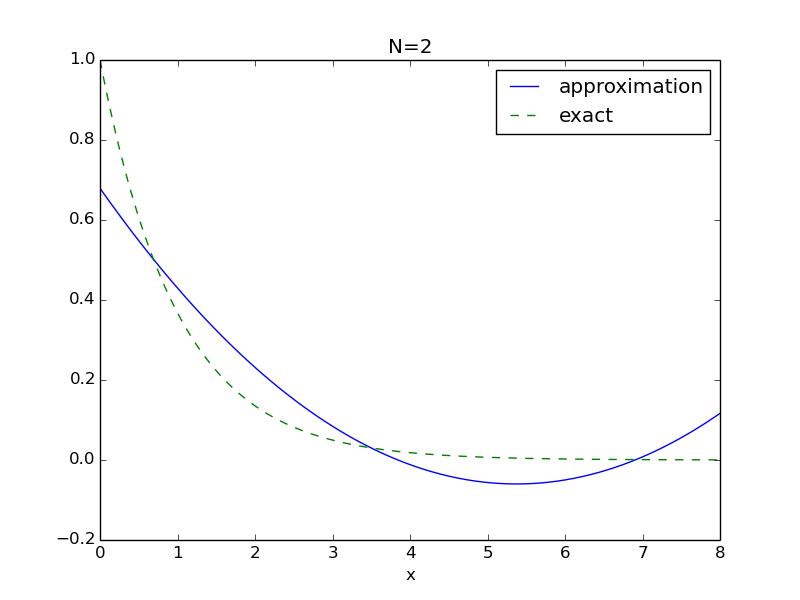
Filename: exp_powers.
Problem 5: Approximate the sine function by power functions
In this exercise we want to approximate the sine function by polynomials of order \( N+1 \). Consider two bases: $$ \begin{align*} V_1 &= \{x, x^3, x^5, \ldots, x^{N-2}, x^N \}, \\ V_2 &= \{1,x,x^2,x^3,\ldots, x^N\}\tp \end{align*} $$ The basis \( V_1 \) is motivated by the fact that the Taylor polynomial approximation to the sine function has only odd powers, while \( V_2 \) is motivated by the assumption that also the even powers could improve the approximation in a least-squares setting.
Compute the best approximation to \( f(x)=\sin(x) \) among all functions in \( V_1 \) and \( V_2 \) on two domains of increasing sizes: \( \Omega_{1,k} = [0, k\pi] \), \( k=2,3\ldots,6 \) and \( \Omega_{2,k} = [-k\pi /2, k\pi/2] \), \( k=2,3,4,5 \). Make plots for all combinations of \( V_1 \), \( V_2 \), \( \Omega_1 \), \( \Omega_2 \), \( k=2,3,\ldots,6 \).
Add a plot of the \( N \)-th degree Taylor polynomial approximation of \( \sin(x) \) around \( x=0 \).
You can make a loop over \( V_1 \) and \( V_2 \), a loop over
\( \Omega_1 \) and \( \Omega_2 \), and a loop over \( k \). Inside the loops,
call the functions least_squares and
comparison_plot from the approx1D module.
\( N=7 \) is a suggested value.
Suitable code is
import sympy as sym
from approx1D import least_squares, comparison_plot
from math import pi
import matplotlib.pyplot as plt
x = sym.Symbol('x')
f = sym.sin(x)
N = 7
psi_bases = [[x**i for i in range(1, N+1, 2)], # V_1
[x**i for i in range(0, N+1)]] # V_2
symbolic = False
for V, psi in enumerate(psi_bases):
for domain_no in range(1, 3):
for k in range(2, 6):
if symbolic:
Omega = [0, k*sym.pi] if domain_no == 1 else \
[-k*sym.pi/2, k*sym.pi/2]
else:
# cannot use sym.pi with numerical sympy computing
Omega = [0, k*pi] if domain_no == 1 else \
[-k*pi/2, k*pi/2]
u, c = least_squares(f, psi, Omega, symbolic=symbolic)
comparison_plot(
f, u, Omega,
ymin=-2, ymax=2,
filename='tmp_N%d_V%dOmega%dk%d' %
(N, V, k, domain_no),
plot_title='sin(x) on [0,%d*pi/2] by %s' %
(k, ','.join([str(p) for p in psi])))
# Need to kill the plot to proceed!
for ext in 'png', 'pdf':
cmd = 'doconce combine_images -2 ' + \
' '.join(['tmp_N%d_V%dOmega%dk%d.' %
(N, V, k, domain_no) + ext
for k in range(2, 6)]) + \
' sin_powers_N%d_V%d_Omega%d.' % (N, V, domain_no) + ext
print cmd
os.system(cmd)
# Show the standard Taylor series approximation
from math import factorial, pi
import time
Omega = [0, 12*pi/2.]
u = 0
for k in range(0,N+1):
u = u + ((-1)**k*x**(1+2*k))/float(factorial(1+2*k))
# Shorter: u = sum(((-1)**k*x**(1+2*k))/float(factorial(1+2*k))
# for k in range(0,10))
comparison_plot(f, u, Omega, 'sin_taylor%d' % k,
ymin=-1.5, ymax=1.5)
The odd powers (\( V_1 \) space) behave not so good on \( \Omega_{1,k} \), but better on \( \Omega_{2,k} \):
Figure 48: \( V_1 \) space, \( \Omega_{1,k} \) domain.

Figure 49: \( V_1 \) space, \( \Omega_{2,k} \) domain.

Including also even powers (\( V_2 \) space) is clearly much better:
Figure 50: \( V_2 \) space, \( \Omega_{1,k} \) domain.
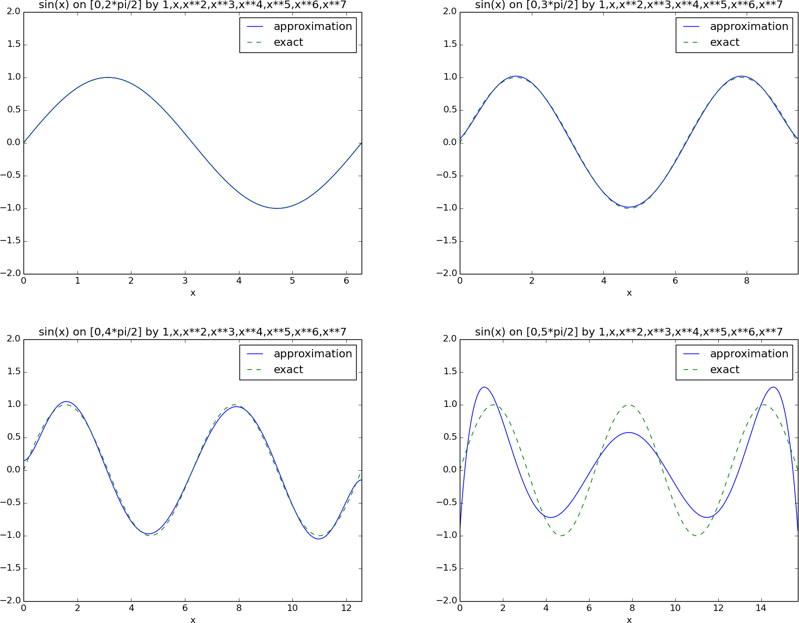
Figure 51: \( V_2 \) space, \( \Omega_{2,k} \) domain.

Comparison with a standard Taylor series shows that it is very inferior as an approximation over the entire domain, but much more accurate close to the origin (as expected, since the Taylor series is constructed with this property, while the least squares method tries to find a good approximation over the entire domain).
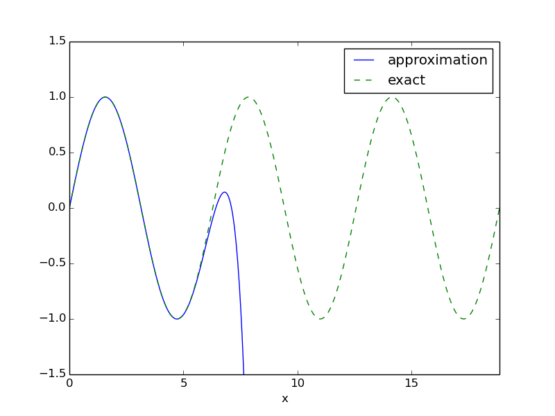
Filename: sin_powers.
Problem 6: Approximate a steep function by sines
Find the best approximation of \( f(x) = \tanh (s(x-\pi)) \) on \( [0, 2\pi] \) in the space \( V \) with basis \( \baspsi_i(x) = \sin((2i+1)x) \), \( i\in\If = \{0,\ldots,N\} \). Make a movie showing how \( u=\sum_{j\in\If}c_j\baspsi_j(x) \) approximates \( f(x) \) as \( N \) grows. Choose \( s \) such that \( f \) is steep (\( s=20 \) is appropriate).
One may naively call the least_squares_orth and comparison_plot
from the approx1D module in a loop and extend the basis with
one new element in each pass. This approach
implies a lot of recomputations.
A more efficient strategy is to let least_squares_orth
compute with only one basis function at a time and accumulate
the corresponding u in the total solution.
ffmpeg or avconv may skip frames when plot files are combined to
a movie. Since there are few files and we want to see each of them,
use convert to make an animated GIF file (-delay 200 is
suitable).
The code may read
import sympy as sym
from approx1D import least_squares_orth, comparison_plot
import matplotlib.pyplot as plt
x = sym.Symbol('x')
# Naive approach: (not utilizing the fact that i+1 computations can
# make use of i computations)
def naive(f, s, Omega, N=10):
psi = []
for i in range(N+1):
psi.append(sym.sin((2*i+1)*x))
u, c = least_squares_orth(f, psi, Omega, symbolic=False)
comparison_plot(f, u, Omega, 'tmp_sin%02dx' % i,
legend_loc='upper left', show=True)
# Efficient approach: compute just the matrix diagonal
def efficient(f, s, Omega, N=10):
u = 0
for i in range(N+1):
psi = [sym.sin((2*i+1)*x)]
next_term, c = least_squares_orth(f, psi, Omega, False)
u = u + next_term
comparison_plot(f, u, Omega, 'tmp_sin%02dx' % i,
legend_loc='upper left', show=False,
plot_title='s=%g, i=%d' % (s, i))
if __name__ == '__main__':
s = 20 # steepness
f = sym.tanh(s*(x-sym.pi))
from math import pi
Omega = [0, 2*pi] # sym.pi did not work here
efficient(f, s, Omega, N=10)
# Make movie
# avconv/ffmpeg skips frames, use convert instead (few files)
cmd = 'convert -delay 200 tmp_sin*.png tanh_sines_approx.gif'
os.system(cmd)
# Make static plots, 3 figures on 2 lines
for ext in 'pdf', 'png':
cmd = 'doconce combine_images %s -3 ' % ext
cmd += 'tmp_sin00x tmp_sin01x tmp_sin02x tmp_sin04x '
cmd += 'tmp_sin07x tmp_sin10x tanh_sines_approx'
os.system(cmd)
plt.show()
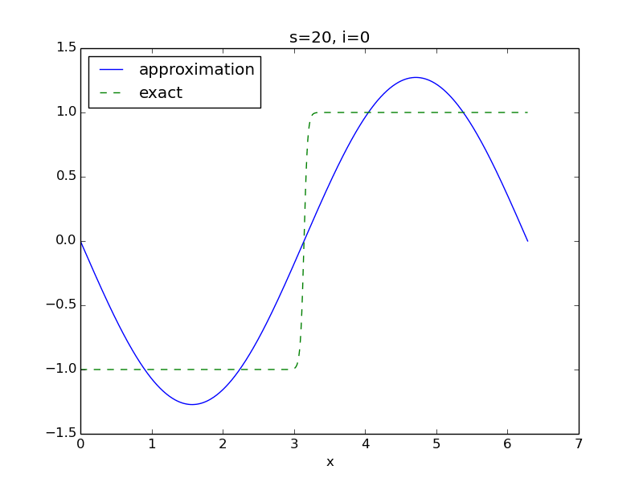
Filename: tanh_sines.
Remarks
Approximation of a discontinuous (or steep) \( f(x) \) by sines, results in slow convergence and oscillatory behavior of the approximation close to the abrupt changes in \( f \). This is known as the Gibb's phenomenon.
Problem 7: Approximate a steep function by sines with boundary adjustment
We study the same approximation problem as in Problem 6: Approximate a steep function by sines. Since \( \baspsi_i(0)=\baspsi_i(2\pi)=0 \) for all \( i \), \( u=0 \) at the boundary points \( x=0 \) and \( x=2\pi \), while \( f(0)=-1 \) and \( f(2\pi)=1 \). This discrepancy at the boundary can be removed by adding a boundary function \( B(x) \): $$ u(x) = B(x) + \sum_{j\in\If} c_j\baspsi_j(x), $$ where \( B(x) \) has the right boundary values: \( B(x_L)=f(x_L) \) and \( B(x_R)=f(x_R) \), with \( x_L=0 \) and \( x_R=2\pi \) as the boundary points. A linear choice of \( B(x) \) is $$ B(x) = \frac{(x_R-x)f(x_L) + (x-x_L)f(x_R)}{x_R-x_L}\tp$$
a) Use the basis \( \baspsi_i(x) = \sin((i+1)x) \), \( i\in\If = \{0,\ldots,N\} \) and plot \( u \) and \( f \) for \( N=16 \). (It suffices to make plots for even \( i \).)
With a boundary term \( B(x) \) we call least_squares_orth with
f-B as right-hand side function, and we must remember to add \( B \) to \( u \).
We can extend the code from Problem 6: Approximate a steep function by sines and
let the function efficient handle different choices of basis.
Appropriate code for all three subexercises is
import sympy as sym
from approx1D import least_squares_orth, comparison_plot
import matplotlib.pyplot as plt
import tanh_sines_approx
x = sym.Symbol('x')
def efficient(f, B, s, Omega, N=10, basis='a'):
u = B
for i in range(N+1):
if basis == 'a':
psi = [sym.sin((i+1)*x)]
elif basis == 'b':
psi = [sym.sin((2*i+1)*x)]
elif basis == 'c':
psi = [sym.sin(2*(i+1)*x)]
next_term, c = least_squares_orth(f-B, psi, Omega, False)
u = u + next_term
# Make only plot for i even
if i % 2 == 0:
comparison_plot(f, u, Omega, 'tmp_sin%02dx' % i,
legend_loc='upper left', show=False,
plot_title='s=%g, i=%d' % (s, i))
if __name__ == '__main__':
s = 20 # steepness
f = sym.tanh(s*(x-sym.pi))
from math import pi
Omega = [0, 2*pi] # sym.pi did not work here
# sin((i+1)*x) basis
xL = Omega[0]
xR = Omega[1]
B = ((xR-x)*f.subs(x, xL) + (x-xL)*f.subs(x, xR))/(xR-xL)
for exercise in 'a', 'b', 'c':
efficient(f, B, s, Omega, N=16, basis=exercise)
# Make movie
cmd = 'convert -delay 200 tmp_sin*.png '
cmd += 'tanh_sines_boundary_term_%s.gif' % exercise
os.system(cmd)
# Make static plots, 3 figures on 2 lines
for ext in 'pdf', 'png':
cmd = 'doconce combine_images %s -3 ' % ext
cmd += 'tmp_sin00x tmp_sin02x tmp_sin04x tmp_sin08x '
cmd += 'tmp_sin12x tmp_sin16x '
cmd += 'tanh_sines_boundary_term_%s' % exercise
os.system(cmd)
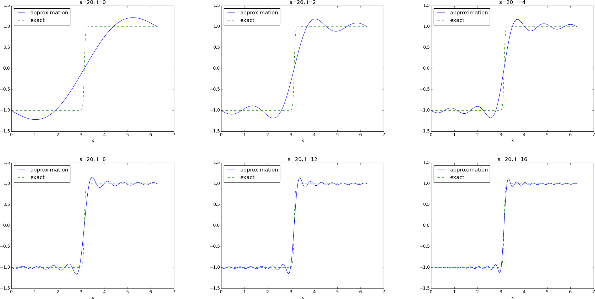
b) Use the basis from Problem 6: Approximate a steep function by sines, \( \baspsi_i(x) = \sin((2i+1)x) \), \( i\in\If = \{0,\ldots,N\} \). (It suffices to make plots for even \( i \).) Observe that the approximation converges to a piecewise linear function!

c) Use the basis \( \baspsi_i(x) = \sin(2(i+1)x) \), \( i\in\If = \{0,\ldots,N\} \), and observe that the approximation converges to a piecewise constant function.
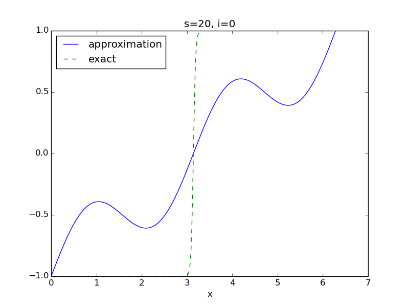
Filename: tanh_sines_boundary_term.
Remarks
The strange results in b) and c) are due to the choice of basis. In b), \( \basphi_i(x) \) is an odd function around \( x=\pi/2 \) and \( x=3\pi/2 \). No combination of basis functions is able to approximate the flat regions of \( f \). All basis functions in c) are even around \( x=\pi/2 \) and \( x=3\pi/2 \), but odd at \( x=0,\pi,2\pi \). With all the sines represented, as in a), the approximation is not constrained with a particular symmetry behavior.
Exercise 8: Fourier series as a least squares approximation
a) Given a function \( f(x) \) on an interval \( [0,L] \), look up the formula for the coefficients \( a_j \) and \( b_j \) in the Fourier series of \( f \): $$ \begin{equation*} f(x) = \frac{1}{2}a_0 + \sum_{j=1}^\infty a_j\cos \left(j\frac{2\pi x}{L}\right) + \sum_{j=1}^\infty b_j\sin \left(j\frac{2\pi x}{L}\right)\tp \end{equation*} $$
From Wikipedia we have $$ \begin{align*} a_j &= \frac{2}{L}\int_0^P f(x)\cos\left(j\frac{2\pi x}{L}\right) \dx,\\ b_j &= \frac{2}{L}\int_0^P f(x)\sin\left(j\frac{2\pi x}{L}\right) \dx\tp \end{align*} $$
b) Let an infinite-dimensional vector space \( V \) have the basis functions \( \cos j\frac{2\pi x}{L} \) for \( j=0,1,\dots,\infty \) and \( \sin j\frac{2\pi x}{L} \) for \( j=1,\dots,\infty \). Show that the least squares approximation method from the section Approximation of functions leads to a linear system whose solution coincides with the standard formulas for the coefficients in a Fourier series of \( f(x) \) (see also the section Fourier series).
You may choose $$ \begin{equation} \baspsi_{2i} = \cos\left( i\frac{2\pi}{L}x\right),\quad \baspsi_{2i+1} = \sin\left( i\frac{2\pi}{L}x\right), \tag{125} \end{equation} $$ for \( i=0,1,\ldots,N\rightarrow\infty \).
The entries in the linear system arising from the least squares method are \( A_{i,j}=\int_0^L\baspsi_i\baspsi_j\dx \) and \( b_i=\int_0^L f(x)\baspsi_i \dx \). To avoid name clash between the right-hand side components of the linear system and the \( b_i \) coefficients in the Fourier series, we use the symbol \( q_i \) for the former. With the basis functions in (125) we get four different types of integrals: $$ \begin{align*} A_{2i,2j} &= \int_0^L \cos\left( i\frac{2\pi}{L}x\right) \cos\left( j\frac{2\pi}{L}x\right)\dx = A_{2j,2i},\\ A_{2i, 2j+1} &= \int_0^L \cos\left( i\frac{2\pi}{L}x\right) \sin\left( j\frac{2\pi}{L}x\right)\dx,\\ A_{2i+1,2j} &= \int_0^L \sin\left( i\frac{2\pi}{L}x\right) \cos\left( j\frac{2\pi}{L}x\right)\dx,\\ A_{2i+1, 2j+1} &= \int_0^L \sin\left( i\frac{2\pi}{L}x\right) \sin\left( j\frac{2\pi}{L}x\right)dx,\\ q_{2i} &= \int_0^L f(x)\cos\left( i\frac{2\pi}{L}x\right)\dx,\\ q_{2i+1} &= \int_0^L f(x)\sin\left( i\frac{2\pi}{L}x\right)\dx\tp \end{align*} $$ Now, the sine and cosine basis functions are orthogonal on \( [0,L] \). We have in general $$ \begin{align*} \int_0^L \cos\left( i\frac{2\pi}{L}x\right) \cos\left( j\frac{2\pi}{L}x\right)\dx &=0,\quad i\neq j,\\ \int_0^L \cos\left( i\frac{2\pi}{L}x\right) \cos\left( j\frac{2\pi}{L}x\right)\dx &=\frac{L}{2},\quad i= j\neq 0,\\ \int_0^L \cos\left( i\frac{2\pi}{L}x\right) \cos\left( j\frac{2\pi}{L}x\right)\dx &=L,\quad i= j= 0,\\ \int_0^L \sin\left( i\frac{2\pi}{L}x\right) \sin\left( j\frac{2\pi}{L}x\right)\dx &=0,\quad i\neq j,\\ \int_0^L \sin\left( i\frac{2\pi}{L}x\right) \sin\left( j\frac{2\pi}{L}x\right)\dx &=\frac{L}{2},\quad i= j,\\ \int_0^L \cos\left( i\frac{2\pi}{L}x\right) \sin\left( j\frac{2\pi}{L}x\right)\dx &=0\tp \end{align*} $$ These results imply that only diagonal terms in the coefficient matrix are different from zero. We have $$ \begin{align*} A_{0,0} &= L,\\ A_{2i,2i} &= \frac{L}{2},\quad i>0,\\ A_{2i+1,2i+1} &= \frac{L}{2}\tp \end{align*} $$ The unknown vector with components \( c_i \) must be arranged as $$ (a_0, b_1, a_1, b_2, a_2, b_3, \ldots)\tp $$ We then get $$ A_{0,0}a_0=q_0,\quad A_{1,1}b_1=q_1,\quad A_{2,2}a_1=q_2,\quad A_{3,3}b_2=q_3,\ldots$$ These equations lead to the formulas $$ \begin{align*} a_0 &= \frac{1}{L}\int_0^P f(x)\dx,\\ b_1 &= \frac{2}{L}\int_0^P f(x)\sin\left( \frac{2\pi}{L}x\right)\dx,\\ a_1 &= \frac{2}{L}\int_0^P f(x)\cos\left( \frac{2\pi}{L}x\right)\dx,\\ b_2 &= \frac{2}{L}\int_0^P f(x)\sin\left( 2\frac{2\pi}{L}x\right)\dx,\\ a_2 &= \frac{2}{L}\int_0^P f(x)\cos\left( 2\frac{2\pi}{L}x\right)\dx\tp \end{align*} $$ which can be generalized to $$ \begin{align*} a_0 &= \frac{1}{L}\int_0^P f(x)\dx,\\ a_j &= \frac{2}{L}\int_0^P f(x)\cos\left( j\frac{2\pi}{L}x\right)\dx,\ j>0,\\ b_j &= \frac{2}{L}\int_0^P f(x)\sin\left( j\frac{2\pi}{L}x\right)\dx,\ j>0, \end{align*} $$ and these are the standard formulas for the Fourier coefficients in a) if we recognize that the \( a_0 \) above is twice the \( a_0 \) in the expressions in a).
c) Choose \( f(x) = H(x-\half) \) on \( \Omega=[0,1] \), where \( H \) is the Heaviside function: \( H(x)=0 \) for \( x < 0 \), \( H(x)=1 \) for \( x>0 \) and \( H(0)=\half \). Find the coefficients \( a_j \) and \( b_j \) in the Fourier series for \( f(x) \). Plot the sum for \( j=2N+1 \), where \( N=5 \) and \( N=100 \).
The formulas give
$$
\begin{align*}
a_0 &= 2\int_0^1 f(x)\dx = 2\int_{\half}^1 \dx,\\
a_j &= 2\int_0^1 f(x)\cos\left( 2j\pi x\right)\dx
= 2\int_{\half}^1 \cos\left( 2j\pi x\right)\dx,\\
b_j &= 2\int_{\half}^1 \sin\left( 2j\pi x\right)\dx\tp
\end{align*}
$$
The integrals are readily computed by sympy:
>>> import sympy as sym
>>> j = sym.symbols('k', integer=True)
>>> x = sym.symbols('x', real=True)
>>> I = integrate(cos(2*j*pi*x), (x,Rational(1,2),1))
>>> I
0
>>> I = integrate(cos(2*0*pi*x), (x,Rational(1,2),1))
>>> I
1/2
>>> I = integrate(sin(2*j*pi*x), (x,Rational(1,2),1))
>>> I
(-1)**j/(2*pi*j) - 1/(2*pi*j)
This means that we have the series $$ u(x) = \frac{1}{2} + 2\sum_{j=1}^\infty \frac{(-1)^j - 1}{2\pi j} \sin\left( 2j\pi x\right)\tp$$ We only get a nonzero coefficient for \( j \) odd: $$ u(x) = \frac{1}{2} -2\sum_{k=1}^\infty \frac{1}{(2k+1)\pi} \sin\left( 2(2k+1)\pi x\right)\tp$$
Appropriate computer code for visualizing the series goes like
import numpy as np
import matplotlib.pyplot as plt
from math import pi
from numpy import sin
def Heaviside_series(x, N):
s = 0.5
for k in range(N):
s += -2.0/((2*k+1)*pi)*sin(2*(2*k+1)*pi*x)
return s
x = np.linspace(0, 1, 1001)
for N in 5, 100:
H = Heaviside_series(x, N)
plt.figure()
plt.plot(x, H)
plt.legend(['$N=%d$' % N], loc='upper left')
plt.savefig('tmp_%d.png' % N)
plt.savefig('tmp_%d.pdf' % N)
plt.show()

We clearly see the Gibbs' phenomenon: oscillations and overshoot around the point of discontinuity in the function we try to approximate.
Filename: Fourier_ls.
Problem 9: Approximate a steep function by Lagrange polynomials
Use interpolation with uniformly distributed points and Chebychev nodes to approximate $$ \begin{equation*} f(x) = -\tanh(s(x-\half)),\quad x\in [0,1],\end{equation*} $$ by Lagrange polynomials for \( s=5 \) and \( s=20 \), and \( N=3,7,11,15 \). Combine \( 2\times 2 \) plots of the approximation for the four \( N \) values, and create such figures for the four combinations of \( s \) values and point types.
The following code does the work (symbolically):
import sys, os
sys.path.insert(0, os.path.join(os.pardir, 'src-approx'))
from approx1D import interpolation, comparison_plot
from Lagrange import Lagrange_polynomials
import sympy as sym
x = sym.Symbol('x')
Omega = [0,1]
N_values = 3, 7, 11, 15
for s in 5, 20:
f = -sym.tanh(s*(x-0.5)) # sympy expression
for distribution in 'uniform', 'Chebyshev':
for N in N_values:
phi, points = Lagrange_polynomials(
x, N, Omega,
point_distribution=distribution)
u, c = interpolation(f, phi, points)
filename = 'tmp_tanh_%d_%d_%s' % (N, s, distribution)
comparison_plot(f, u, Omega, filename,
plot_title='s=%g, N=%d, %s points' %
(s, N, distribution))
# Combine plot files (2x2)
for ext in 'png', 'pdf':
cmd = 'doconce combine_images ' + ext + ' '
cmd += ' '.join([
'tmp_tanh_%d_%d_%s' % (N, s, distribution)
for N in N_values])
cmd += ' tanh_Lagrange_%s_s%s' % (distribution, s)
os.system(cmd)
For a smooth function (\( s=5 \)), the difference between uniform points and Chebyshev nodes is not substantial:


However, for a steep function (\( s=20 \)) the overshoot and oscillations associated with uniform points must be considered unacceptable for larger \( N \) values:

Switching to Chebyshev points does give a great improvement, but we still have oscillatory approximations:

Filename: tanh_Lagrange.
Problem 10: Approximate a steep function by Lagrange polynomials and regression
Redo Problem 9: Approximate a steep function by Lagrange polynomials, but apply a regression method with \( N \)-degree Lagrange polynomials and \( 2N+1 \) data points. Recall that Problem 9: Approximate a steep function by Lagrange polynomials applies \( N+1 \) points and the resulting approximation interpolates \( f \) at these points, while a regression method with more points does not interpolate \( f \) at the data points. Do more points and a regression method help reduce the oscillatory behavior of Lagrange polynomial approximations?
We start out with the program from
Problem 9: Approximate a steep function by Lagrange polynomials. This time we need
to call Lagrange_polynomails twice: first to compute the \( \baspsi(x) \)
functions (of degree \( N \)) and then to compute the data points corresponding
to a uniform or Chebyshev distribution of \( 2N+1 \) nodes.
import sys, os
sys.path.insert(0, os.path.join(os.pardir, 'src-approx'))
from approx1D import regression, comparison_plot
from Lagrange import Lagrange_polynomials
import sympy as sym
import numpy as np
x = sym.Symbol('x')
Omega = [0,1]
N_values = 3, 7, 11, 15
for s in 5, 20:
f = -sym.tanh(s*(x-0.5)) # sympy expression
for distribution in 'uniform', 'Chebyshev':
for N in N_values:
# Compute the points from a 2*N Lagrange polynomial
dummy, points = Lagrange_polynomials(
x, 2*N, Omega,
point_distribution=distribution)
# Compute phi from N points Lagrange polynomial
phi, dummy = Lagrange_polynomials(
x, N, Omega,
point_distribution=distribution)
points = np.array(points, dtype=float)
point_values = -np.tanh(s*(points-0.5))
u, c = regression(f, phi, points)
filename = 'tmp_tanh_%d_%d_%s' % (N, s, distribution)
comparison_plot(f, u, Omega, filename,
plot_title='s=%g, N=%d, %s points' %
(s, N, distribution),
points=points, point_values=point_values,
points_legend='%s points' % (2*N))
# Combine plot files (2x2)
for ext in 'png', 'pdf':
cmd = 'doconce combine_images ' + ext + ' '
cmd += ' '.join([
'tmp_tanh_%d_%d_%s' % (N, s, distribution)
for N in N_values])
cmd += ' tanh_Lagrange_regr_%s_s%s' % (distribution, s)
os.system(cmd)
An important point is to convert points to a numpy array using
dtype=float. Leaving out this second argument makes an array
of objects of symbolic expressions, and we cannot apply tanh to it.
The oscillatory behavior is much reduced using more points and a regression method, and the difference between uniform and Chebyshev points is minor, even in the steep case \( s=20 \):
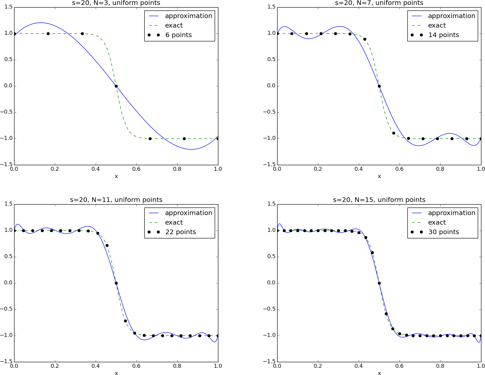

Filename: tanh_Lagrange_regression.
Problem 11: Define nodes and elements
Consider a domain \( \Omega =[0,2] \) divided into the three elements \( [0,1] \), \( [1,1.2] \), and \( [1.2,2] \).
For P1 and P2 elements, set up the list of coordinates and nodes
(nodes) and the numbers of the nodes that belong to each element
(elements) in two cases: 1) nodes and elements numbered from left to
right, and 2) nodes and elements numbered from right to left.
We can write up figure sketches and the data structure in code:
# P1 elements
# Left to right numbering
"""
elements: |--0--|--1--|--2--|
nodes: 0 1 2 3
"""
nodes = [0, 1, 1.2, 2]
elements = [[0,1], [1,2], [2,3]]
# Right to left numbering
"""
elements: |--2--|--1--|--0--|
nodes: 3 2 1 0
"""
nodes = [2, 1.2, 1, 0]
elements = [[1,0], [2,1], [3,2]]
# P2 elements
# Left to right numbering
"""
elements: |--0--|--1--|--2--|
nodes: 0 1 2 3 4 5 6
"""
nodes = [0, 0.5, 1, 1.1, 1.6, 2]
elements = [[0,1,2], [2,3,4], [4,5,6]]
# Right to left numbering
"""
elements: |--2--|--1--|--0--|
nodes: 6 5 4 3 2 1 0
"""
nodes = [2, 1.6, 1.2, 1.1, 1, 0.5, 0]
elements = [[2,1,0], [4,3,2], [6,5,4]]
Filename: fe_numberings1.
Problem 12: Define vertices, cells, and dof maps
Repeat Problem 11: Define nodes and elements, but define the
data structures vertices, cells, and dof_map instead of
nodes and elements.
Written in Python, the solution becomes
# P1 elements
# Left to right numbering
"""
elements: |--0--|--1--|--2--|
vertices: 0 1 2 3
dofs: 0 1 2 3
"""
# elements: 0 1 2
# vertices: 0 1 2 3
vertices = [0, 1, 1.2, 2]
cells = [[0,1], [1,2], [2,3]]
dof_map = [[0,1], [1,2], [2,3]]
# Right to left numbering
"""
elements: |--2--|--1--|--0--|
vertices: 3 2 1 0
dofs: 3 2 1 0
"""
vertices = [2, 1.2, 1, 0]
cells = [[1,0], [2,1], [3,2]]
dof_map = [[1,0], [2,1], [3,2]]
# P2 elements
# Left to right numbering
# elements: 0 1 2
"""
elements: |--0--|--1--|--2--|
vertices: 0 1 2 3
dofs: 0 1 2 3 4 5 6
"""
vertices = [0, 1, 1.2, 2]
cells = [[0,1], [1,2], [2,3]]
dof_map = [[0,1,2], [2,3,4], [4,5,6]]
# Right to left numbering
# elements: 2 1 0
"""
elements: |--2--|--1--|--0--|
vertices: 3 2 1 0
dofs: 6 5 4 3 2 1 0
"""
vertices = [2, 1.2, 1, 0]
cells = [[1,0], [2,1], [3,2]]
dof_map = [[2,1,0], [4,3,2], [6,5,4]]
Filename: fe_numberings2.
Problem 13: Construct matrix sparsity patterns
Problem 11: Define nodes and elements describes a element mesh with a total of five elements, but with two different element and node orderings. For each of the two orderings, make a \( 5\times 5 \) matrix and fill in the entries that will be nonzero.
A matrix entry \( (i,j) \) is nonzero if \( i \) and \( j \) are nodes in the same element.
If we create an empty matrix, we can run through all elements and
then over all local node pairs and mark that the corresponding
entry \( (i,j) \) in the global matrix is a nonzero entry.
The elements data structure is sufficient. Below is a program
that fills matrix entries with an X and prints the matrix sparsity
pattern.
def sparsity_pattern(elements, N_n):
import numpy as np
matrix = np.zeros((N_n, N_n), dtype=str)
matrix[:,:] = '0'
for e in elements:
for i in e:
for j in e:
matrix[i,j] = 'X'
matrix = matrix.tolist()
matrix = '\n'.join([' '.join([matrix[i][j]
for j in range(len(matrix[i]))])
for i in range(len(matrix))])
return matrix
print '\nP1 elements, left-to-right numbering'
N_n = 4
elements = [[0,1], [1,2], [2,3]]
print sparsity_pattern(elements, N_n)
print '\nP1 elements, right-to-left numbering'
elements = [[1,0], [2,1], [3,2]]
print sparsity_pattern(elements, N_n)
print '\nP2 elements, left-to-right numbering'
N_n = 7
elements = [[0,1,2], [2,3,4], [4,5,6]]
print sparsity_pattern(elements, N_n)
print '\nP1 elements, right-to-left numbering'
elements = [[2,1,0], [4,3,2], [6,5,4]]
print sparsity_pattern(elements, N_n)
The output becomes
P1 elements, left-to-right numbering
X X 0 0
X X X 0
0 X X X
0 0 X X
P1 elements, right-to-left numbering
X X 0 0
X X X 0
0 X X X
0 0 X X
P2 elements, left-to-right numbering
X X X 0 0 0 0
X X X 0 0 0 0
X X X X X 0 0
0 0 X X X 0 0
0 0 X X X X X
0 0 0 0 X X X
0 0 0 0 X X X
P1 elements, right-to-left numbering
X X X 0 0 0 0
X X X 0 0 0 0
X X X X X 0 0
0 0 X X X 0 0
0 0 X X X X X
0 0 0 0 X X X
0 0 0 0 X X X
Filename: fe_sparsity_pattern.
Problem 14: Perform symbolic finite element computations
Perform symbolic calculations to find formulas for the coefficient matrix and right-hand side when approximating \( f(x) = \sin (x) \) on \( \Omega=[0, \pi] \) by two P1 elements of size \( \pi/2 \). Solve the system and compare \( u(\pi/2) \) with the exact value 1.
Here are suitable sympy commands:
import sympy as sym
# Mesh: |--------|-------|
# 0 pi/2 pi
#
# Basis functions:
#
# phi_0 phi_1 phi_2
# \ /\ /
# \ / \ /
# \ / \ /
# \/ \/
# |-------|-------|
# 0 pi/2 pi
x = sym.Symbol('x')
A = sym.zeros((3,3))
f = sym.sin
phi_0 = 1 - (2*x)/sym.pi
phi_1l = 2*x/sym.pi # left part of phi_1
phi_1r = 2 - (2*x)/sym.pi # right part of phi_1
phi_2 = x/(sym.pi/2) - 1
node_0 = 0
node_1 = sym.pi/2
node_2 = sym.pi
# Diagonal terms
A[0,0] = sym.integrate(phi_0**2, (x, node_0, node_1))
A[1,1] = sym.integrate(phi_1l**2, (x, node_0, node_1)) + \
sym.integrate(phi_1r**2, (x, node_1, node_2))
A[2,2] = sym.integrate(phi_2**2, (x, node_1, node_2))
# Off-diagonal terms
A[0,1] = sym.integrate(phi_0*phi_1l, (x, node_0, node_1))
A[1,0] = A[0,1]
A[1,2] = sym.integrate(phi_1r*phi_2, (x, node_1, node_2))
A[2,1] = A[1,2]
print 'A:\n', A # Can compare with general matrix, h=pi/2
b = sym.zeros((3,1))
b[0] = sym.integrate(phi_0*f(x), (x, node_0, node_1))
b[1] = sym.integrate(phi_1l*f(x), (x, node_0, node_1)) + \
sym.integrate(phi_1r*f(x), (x, node_1, node_2))
b[2] = sym.integrate(phi_2*f(x), (x, node_1, node_2))
print 'b:\n', b
c = A.LUsolve(b)
print 'c:\n', c
for i in range(len(c)):
print 'c[%d]=%g' % (i, c[i].evalf())
print 'u(pi/2)=%g' % c[1]
# For reports
print sym.latex(A)
print sym.latex(b)
print sym.latex(c)
Running the program, we get the matrix system $$ \left[\begin{matrix}\frac{\pi}{6} & \frac{\pi}{12} & 0\\\frac{\pi}{12} & \frac{\pi}{3} & \frac{\pi}{12}\\0 & \frac{\pi}{12} & \frac{\pi}{6}\end{matrix}\right] \left[\begin{matrix}\frac{1}{\pi} \left(- \frac{24}{\pi} + 8\right)\\\frac{-28 + \frac{168}{\pi}}{7 \pi}\\\frac{1}{\pi} \left(- \frac{24}{\pi} + 8\right)\end{matrix}\right] = \left[\begin{matrix}- \frac{2}{\pi} + 1\\\frac{4}{\pi}\\- \frac{2}{\pi} + 1\end{matrix}\right] $$ The solution at the midpoint is \( 1.15847 \), i.e., 16% error.
Filename: fe_sin_P1.
Problem 15: Approximate a steep function by P1 and P2 elements
Given $$ \begin{equation*} f(x) = \tanh(s(x-\half))\end{equation*} $$ use the Galerkin or least squares method with finite elements to find an approximate function \( u(x) \). Choose \( s=20 \) and try \( N_e=4,8,16 \) P1 elements and \( N_e=2,4,8 \) P2 elements. Integrate \( f\basphi_i \) numerically.
You can automate the computations by calling the approximate method
in the fe_approx1D_numint module.
The set of calls to approximate becomes
from fe_approx1D_numint import approximate
from sympy import tanh, Symbol
x = Symbol('x')
steepness = 20
arg = steepness*(x-0.5)
approximate(tanh(arg), symbolic=False, numint='GaussLegendre2',
d=1, N_e=4, filename='fe_p1_tanh_4e')
approximate(tanh(arg), symbolic=False, numint='GaussLegendre2',
d=1, N_e=8, filename='fe_p1_tanh_8e')
approximate(tanh(arg), symbolic=False, numint='GaussLegendre2',
d=1, N_e=16, filename='fe_p1_tanh_16e')
approximate(tanh(arg), symbolic=False, numint='GaussLegendre3',
d=2, N_e=2, filename='fe_p2_tanh_2e')
approximate(tanh(arg), symbolic=False, numint='GaussLegendre3',
d=2, N_e=4, filename='fe_p2_tanh_4e')
approximate(tanh(arg), symbolic=False, numint='GaussLegendre3',
d=2, N_e=8, filename='fe_p2_tanh_8e')


Filename: fe_tanh_P1P2.
Problem 16: Approximate a steep function by P3 and P4 elements
a) Solve Problem 15: Approximate a steep function by P1 and P2 elements using \( N_e=1,2,4 \) P3 and P4 elements.
We can easily adopt the code from Problem 15: Approximate a steep function by P1 and P2 elements:
from fe_approx1D_numint import approximate, u_glob
from sympy import tanh, Symbol, lambdify
x = Symbol('x')
steepness = 20
arg = steepness*(x-0.5)
approximate(tanh(arg), symbolic=False, numint='GaussLegendre4',
d=3, N_e=1, filename='fe_p3_tanh_1e')
approximate(tanh(arg), symbolic=False, numint='GaussLegendre4',
d=3, N_e=2, filename='fe_p3_tanh_2e')
approximate(tanh(arg), symbolic=False, numint='GaussLegendre4',
d=3, N_e=4, filename='fe_p3_tanh_4e')
approximate(tanh(arg), symbolic=False, numint='GaussLegendre5',
d=4, N_e=1, filename='fe_p4_tanh_1e')
approximate(tanh(arg), symbolic=False, numint='GaussLegendre5',
d=4, N_e=2, filename='fe_p4_tanh_2e')
approximate(tanh(arg), symbolic=False, numint='GaussLegendre5',
d=4, N_e=4, filename='fe_p4_tanh_4e')
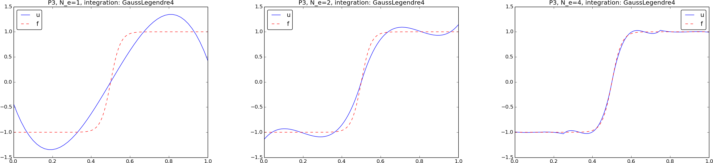
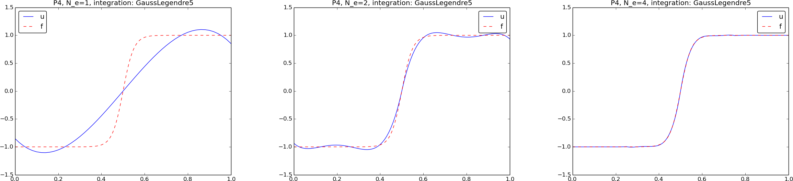
b) How will an interpolation method work in this case with the same number of nodes?
The coefficients arising from the interpolation method are trivial to compute
since \( c_i=f(x_i) \), where \( x_i \) are the global nodes. The function
u_glob in the fe_approx1D_numint module can be used to compute
appropriate arrays for plotting the resulting finite element function.
We create plots where the finite element approximation is shown along
with \( f(x) \) and the interpolation points.
Since u_glob requires the vertices, cells, and dof_map data
structures, we must compute these for the values of number of
elements (\( N_e \)) and the polynomial degree (\( d \)).
# Interpolation method
import numpy as np
import matplotlib.pyplot as plt
f = lambdify([x], tanh(arg), modules='numpy')
# Compute exact f on a fine mesh
x_fine = np.linspace(0, 1, 101)
f_fine = f(x_fine)
for d in 3, 4:
for N_e in 1, 2, 4:
h = 1.0/N_e # element length
vertices = [i*h for i in range(N_e+1)]
cells = [[e, e+1] for e in range(N_e)]
dof_map = [[d*e + i for i in range(d+1)] for e in range(N_e)]
N_n = d*N_e + 1 # Number of nodes
x_nodes = np.linspace(0, 1, N_n) # Node coordinates
U = f(x_nodes) # Interpolation method samples node values
x, u, _ = u_glob(U, vertices, cells, dof_map,
resolution_per_element=51)
plt.figure()
plt.plot(x, u, '-', x_fine, f_fine, '--',
x_nodes, U, 'bo')
plt.legend(['%d P%d elements' % (N_e, d),
'exact', 'interpolation points'],
loc='upper left')
plt.savefig('tmp_%d_P%d.pdf' % (N_e, d))
plt.savefig('tmp_%d_P%d.png' % (N_e, d))
plt.show()


Filename: fe_tanh_P3P4.
Exercise 17: Investigate the approximation error in finite elements
The theory (101) from the section Computing the error of the approximation predicts that the error in the Pd approximation of a function should behave as \( h^{d+1} \), where \( h \) is the length of the element. Use experiments to verify this asymptotic behavior (i.e., for small enough \( h \)). Choose three examples: \( f(x)=Ae^{-\omega x} \) on \( [0,3/\omega] \), \( f(x) = A\sin (\omega x) \) on \( \Omega=[0, 2\pi/\omega] \) for constant \( A \) and \( \omega \), and \( f(x)=\sqrt{x} \) on \( [0,1] \).
Run a series of experiments: \( (h_i,E_i) \), \( i=0,\ldots,m \), where \( E_i \) is the \( L^2 \) norm of the error corresponding to element length \( h_i \). Assume an error model \( E=Ch^r \) and compute \( r \) from two successive experiments: $$ r_i = \ln (E_{i+1}/E_i)/\ln (h_{i+1}/h_i),\quad i=0,\ldots,m-1\tp$$ Hopefully, the sequence \( r_0,\ldots,r_{m-1} \) converges to the true \( r \), and \( r_{m-1} \) can be taken as an approximation to \( r \). Run such experiments for different \( d \) for the different \( f(x) \) functions.
The approximate function in fe_approx1D_numint.py is handy for
calculating the numerical solution. This function returns the
finite element solution as the coefficients \( \sequencei{c} \).
To compute \( u \), use u_glob from the same module.
Use the Trapezoidal rule to integrate the \( L^2 \) error:
xc, u = u_glob(c, vertices, cells, dof_map)
e = f_func(xc) - u
L2_error = 0
e2 = e**2
for i in range(len(xc)-1):
L2_error += 0.5*(e2[i+1] + e2[i])*(xc[i+1] - xc[i])
L2_error = np.sqrt(L2_error)
The reason for this Trapezoidal integration is
that u_glob returns coordinates xc and corresponding u values
where some of the coordinates (the cell vertices) coincides, because
the solution is computed in one element at a time, using all local
nodes. Also note that there are many coordinates in \( xc \) per cell
such that we can accurately compute the error inside each cell.
Here is an appropriate program:
from fe_approx1D_numint import approximate, mesh_uniform, u_glob
from sympy import sqrt, exp, sin, Symbol, lambdify, simplify
import numpy as np
from math import log
x = Symbol('x')
A = 1
w = 1
cases = {'sqrt': {'f': sqrt(x), 'Omega': [0,1]},
'exp': {'f': A*exp(-w*x), 'Omega': [0, 3.0/w]},
'sin': {'f': A*sin(w*x), 'Omega': [0, 2*np.pi/w]}}
results = {}
d_values = [1, 2, 3, 4]
for case in cases:
f = cases[case]['f']
f_func = lambdify([x], f, modules='numpy')
Omega = cases[case]['Omega']
results[case] = {}
for d in d_values:
results[case][d] = {'E': [], 'h': [], 'r': []}
for N_e in [4, 8, 16, 32, 64, 128]:
try:
c = approximate(
f, symbolic=False,
numint='GaussLegendre%d' % (d+1),
d=d, N_e=N_e, Omega=Omega,
filename='tmp_%s_d%d_e%d' % (case, d, N_e))
except np.linalg.linalg.LinAlgError as e:
print str(e)
continue
vertices, cells, dof_map = mesh_uniform(
N_e, d, Omega, symbolic=False)
xc, u, _ = u_glob(c, vertices, cells, dof_map, 51)
e = f_func(xc) - u
# Trapezoidal integration of the L2 error over the
# xc/u patches
e2 = e**2
L2_error = 0
for i in range(len(xc)-1):
L2_error += 0.5*(e2[i+1] + e2[i])*(xc[i+1] - xc[i])
L2_error = np.sqrt(L2_error)
h = (Omega[1] - Omega[0])/float(N_e)
results[case][d]['E'].append(L2_error)
results[case][d]['h'].append(h)
# Compute rates
h = results[case][d]['h']
E = results[case][d]['E']
for i in range(len(h)-1):
r = log(E[i+1]/E[i])/log(h[i+1]/h[i])
results[case][d]['r'].append(round(r, 2))
print results
for case in results:
for d in sorted(results[case]):
print 'case=%s d=%d, r: %s' % \
(case, d, results[case][d]['r'])
The output becomes
case=sqrt d=1, r: [1.0, 1.0, 1.0, 1.0, 1.0]
case=sqrt d=2, r: [1.0, 1.0, 1.0, 1.0, 1.0]
case=sqrt d=3, r: [1.0, 1.0, 1.0, 1.0, 1.0]
case=sqrt d=4, r: [1.0, 1.0, 1.0, 1.0, 1.0]
case=exp d=1, r: [2.01, 2.01, 2.0, 2.0, 2.0]
case=exp d=2, r: [2.81, 2.89, 2.94, 2.97, 2.98]
case=exp d=3, r: [3.98, 4.0, 4.0, 4.0, 4.0]
case=exp d=4, r: [4.87, 4.93, 4.96, 4.98, 4.99]
case=sin d=1, r: [2.15, 2.06, 2.02, 2.0, 2.0]
case=sin d=2, r: [2.68, 2.83, 2.93, 2.97, 2.99]
case=sin d=3, r: [4.06, 4.04, 4.01, 4.0, 4.0]
case=sin d=4, r: [4.79, 4.9, 4.96, 4.98, 4.99]
showing that the convergence rate stabilizes quite quickly at \( N_e=128 \) cells. While the theory predicts the rate as \( d+1 \), this is only fulfilled for the exponential and sine functions, while the square root functions gives a rate 1 regardless of \( d \). The reason is that the estimate (101) contains the integral of the derivatives of \( f \) over \( [0,1] \). For \( f=\sqrt{x} \), we have \( f'=\half x^{-1/2} \), \( f''=-\frac{1}{4}x^{-3/2} \), and all integrals of \( f'' \) and higher derivatives are infinite on \( [0,L] \). Our experiments show that the method still converges, but \( f \) is not smooth enough that higher-order elements give superior convergence rates.
Filename: Pd_approx_error.
Problem 18: Approximate a step function by finite elements
Approximate the step function $$ \begin{equation*} f(x) = \left\lbrace\begin{array}{ll} 0 & 0\leq x < \halfi,\\ 1 & \halfi \leq x \geq \halfi \end{array}\right. \end{equation*} $$ by 2, 4, 8, and 16 P1, P2, P3, and P4. Compare approximations visually.
This \( f \) can also be expressed in terms of the Heaviside function \( H(x) \): \( f(x) = H(x-\halfi) \). Therefore, \( f \) can be defined by
f = sym.Heaviside(x - sym.Rational(1,2))
making the approximate function in the
fe_approx1D.py module an obvious candidate to solve the
problem. However, sympy does not handle symbolic integration
with this particular integrand, and the approximate function faces a problem
when converting f to a Python function (for plotting) since
Heaviside is not an available function in numpy.
An alternative is to perform hand calculations. This is an instructive
task, but in practice only feasible for few elements and P1 and P2 elements.
It is better to copy the functions element_matrix, element_vector,
assemble, and approximate from the fe_approx1D_numint.py file
and edit these functions such that they can compute approximations
with f given as a Python function and not a symbolic expression.
Also assume that phi computed by the basis function is a Python
callable function. Remove all instances of the symbolic variable
and associated code.
The modifications of element_matrix, element_vector,
assemble, and approximate from the fe_approx1D_numint.py file
are listed below.
from fe_approx1D_numint import mesh_uniform, u_glob
from fe_approx1D import basis
import numpy as np
def element_matrix(phi, Omega_e, numint):
n = len(phi)
A_e = np.zeros((n, n))
h = Omega_e[1] - Omega_e[0]
detJ = h/2 # dx/dX
for r in range(n):
for s in range(r, n):
for j in range(len(numint[0])):
Xj, wj = numint[0][j], numint[1][j]
A_e[r,s] += phi[r](Xj)*phi[s](Xj)*detJ*wj
A_e[s,r] = A_e[r,s]
return A_e
def element_vector(f, phi, Omega_e, numint):
n = len(phi)
b_e = np.zeros(n)
h = Omega_e[1] - Omega_e[0]
detJ = h/2
for r in range(n):
for j in range(len(numint[0])):
Xj, wj = numint[0][j], numint[1][j]
xj = (Omega_e[0] + Omega_e[1])/2 + h/2*Xj # mapping
b_e[r] += f(xj)*phi[r](Xj)*detJ*wj
return b_e
def assemble(vertices, cells, dof_map, phi, f, numint):
import sets
N_n = len(list(set(np.array(dof_map).ravel())))
N_e = len(cells)
A = np.zeros((N_n, N_n))
b = np.zeros(N_n)
for e in range(N_e):
Omega_e = [vertices[cells[e][0]], vertices[cells[e][1]]]
A_e = element_matrix(phi[e], Omega_e, numint)
b_e = element_vector(f, phi[e], Omega_e, numint)
#print 'element', e
#print b_e
for r in range(len(dof_map[e])):
for s in range(len(dof_map[e])):
A[dof_map[e][r],dof_map[e][s]] += A_e[r,s]
b[dof_map[e][r]] += b_e[r]
return A, b
def approximate(f, d, N_e, numint, Omega=[0,1], filename='tmp'):
"""
Compute the finite element approximation, using Lagrange
elements of degree d, to a Python functionn f on a domain
Omega. N_e is the number of elements.
numint is the name of the numerical integration rule
(Trapezoidal, Simpson, GaussLegendre2, GaussLegendre3,
GaussLegendre4, etc.). numint=None implies exact
integration.
"""
from math import sqrt
numint_name = numint # save name
if numint == 'Trapezoidal':
numint = [[-1, 1], [1, 1]]
elif numint == 'Simpson':
numint = [[-1, 0, 1], [1./3, 4./3, 1./3]]
elif numint == 'Midpoint':
numint = [[0], [2]]
elif numint == 'GaussLegendre2':
numint = [[-1/sqrt(3), 1/sqrt(3)], [1, 1]]
elif numint == 'GaussLegendre3':
numint = [[-sqrt(3./5), 0, sqrt(3./5)],
[5./9, 8./9, 5./9]]
elif numint == 'GaussLegendre4':
numint = [[-0.86113631, -0.33998104, 0.33998104,
0.86113631],
[ 0.34785485, 0.65214515, 0.65214515,
0.34785485]]
elif numint == 'GaussLegendre5':
numint = [[-0.90617985, -0.53846931, -0. ,
0.53846931, 0.90617985],
[ 0.23692689, 0.47862867, 0.56888889,
0.47862867, 0.23692689]]
elif numint is not None:
print 'Numerical rule %s is not supported for numerical computing' % numint
sys.exit(1)
vertices, cells, dof_map = mesh_uniform(N_e, d, Omega)
# phi is a list where phi[e] holds the basis in cell no e
# (this is required by assemble, which can work with
# meshes with different types of elements).
# len(dof_map[e]) is the number of nodes in cell e,
# and the degree of the polynomial is len(dof_map[e])-1
phi = [basis(len(dof_map[e])-1) for e in range(N_e)]
A, b = assemble(vertices, cells, dof_map, phi, f,
numint=numint)
print 'cells:', cells
print 'vertices:', vertices
print 'dof_map:', dof_map
print 'A:\n', A
print 'b:\n', b
c = np.linalg.solve(A, b)
print 'c:\n', c
if filename is not None:
title = 'P%d, N_e=%d' % (d, N_e)
title += ', integration: %s' % numint_name
x_u, u, _ = u_glob(np.asarray(c), vertices, cells, dof_map,
resolution_per_element=51)
x_f = np.linspace(Omega[0], Omega[1], 10001) # mesh for f
import scitools.std as plt
plt.plot(x_u, u, '-',
x_f, f(x_f), '--')
plt.legend(['u', 'f'])
plt.title(title)
plt.savefig(filename + '.pdf')
plt.savefig(filename + '.png')
return c
With a purely numerical version of the approximate function, we can
easily investigate the suggested approximations in this exercise:
def exercise():
def f(x):
if isinstance(x, (float,int)):
return 0 if x < 0.5 else 1
elif isinstance(x, np.ndarray):
return np.where(x < 0.5, 0, 1)
N_e_values = [2, 4, 8, 16]
for d in 1, 2, 3, 4:
for N_e in N_e_values:
approximate(f, numint='GaussLegendre%d' % (d+1),
d=d, N_e=N_e,
filename='fe_Heaviside_P%d_%de' % (d, N_e))
for ext in 'pdf', 'png':
cmd = 'doconce combine_images '
cmd += ext + ' -2 '
cmd += ' '.join(['fe_Heaviside_P%d_%de' % (d, N_e)
for N_e in N_e_values])
cmd += ' fe_Heaviside_P%d' % d
print cmd
os.system(cmd)
Running this function reveals that even finite elements (and not only sines, as demonstrated in Exercise 8: Fourier series as a least squares approximation) give oscillations around a discontinuity.


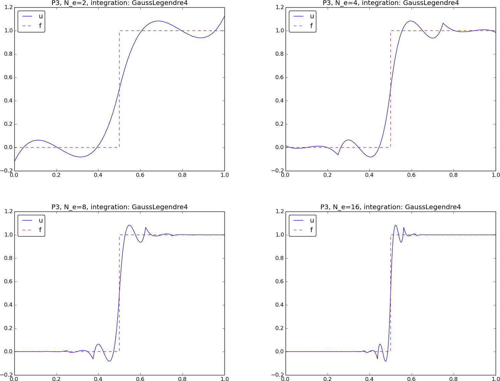

Remarks. It is of extreme importance to use a Gauss-Legendre numerical integration rule that matches the degree of polynomials in the basis. Using a rule with fewer points may lead to very strange results.
Filename: fe_Heaviside_P1P2.
Exercise 19: 2D approximation with orthogonal functions
a)
Assume we have basis functions \( \basphi_i(x,y) \) in 2D that are
orthogonal such that \( (\basphi_i,\basphi_j)=0 \) when \( i\neq j \). The
function least_squares in the file approx2D.py will then spend much time on computing
off-diagonal terms in the coefficient matrix that we know are zero.
To speed up the computations, make a version least_squares_orth that
utilizes the orthogonality among the basis functions.
We 1) remove the j loop in the least_squares function and set
j = i,
2) make A a vector (i.e., \( (N+1, 1) \) matrix as b and c),
3) solve for c[i,0] as soon as A[i,0] and b[i,0] are computed.
import sympy as sym
def least_squares_orth(f, psi, Omega, symbolic=True,
print_latex=False):
"""
Given a function f(x,y) on a rectangular domain
Omega=[[xmin,xmax],[ymin,ymax]],
return the best approximation to f(x,y) in the space V
spanned by the functions in the list psi.
This function assumes that psi are orthogonal on Omega.
"""
# Modification of least_squares function: drop the j loop,
# set j=i, compute c on the fly in the i loop.
N = len(psi) - 1
# Note that A, b, c becmes (N+1)x(N+1), use 1st column
A = sym.zeros(N+1)
b = sym.zeros(N+1)
c = sym.zeros(N+1)
x, y = sym.symbols('x y')
print '...evaluating matrix...', A.shape, b.shape, c.shape
for i in range(N+1):
j = i
print '(%d,%d)' % (i, j)
integrand = psi[i]*psi[j]
if symbolic:
I = sym.integrate(integrand,
(x, Omega[0][0], Omega[0][1]),
(y, Omega[1][0], Omega[1][1]))
if not symbolic or isinstance(I, sym.Integral):
# Could not integrate symbolically, use numerical int.
print 'numerical integration of', integrand
integrand = sym.lambdify([x,y], integrand)
I = sym.mpmath.quad(integrand,
[Omega[0][0], Omega[0][1]],
[Omega[1][0], Omega[1][1]])
A[i,0] = I
integrand = psi[i]*f
if symbolic:
I = sym.integrate(integrand,
(x, Omega[0][0], Omega[0][1]),
(y, Omega[1][0], Omega[1][1]))
if not symbolic or isinstance(I, sym.Integral):
# Could not integrate symbolically, use numerical int.
print 'numerical integration of', integrand
integrand = sym.lambdify([x,y], integrand)
I = sym.mpmath.quad(integrand,
[Omega[0][0], Omega[0][1]],
[Omega[1][0], Omega[1][1]])
b[i,0] = I
c[i,0] = b[i,0]/A[i,0]
print
print 'A:\n', A, '\nb:\n', b
c = [c[i,0] for i in range(c.shape[0])] # make list
print 'coeff:', c
# c is a sympy Matrix object, numbers are in c[i,0]
u = sum(c[i]*psi[i] for i in range(len(psi)))
print 'approximation:', u
print 'f:', sym.expand(f)
if print_latex:
print sym.latex(A, mode='plain')
print sym.latex(b, mode='plain')
print sym.latex(c, mode='plain')
return u, c
b) Apply the function to approximate $$ f(x,y) = x(1-x)y(1-y)e^{-x-y}$$ on \( \Omega = [0,1]\times [0,1] \) via basis functions $$ \basphi_i(x,y) = \sin ((p+1)\pi x)\sin((q+1)\pi y),\quad i=q(N_x+1) + p, $$ where \( p=0,\ldots,N_x \) and \( q=0,\ldots,N_y \).
Get ideas from the function least_squares_orth in
the section Orthogonal basis functions and
file approx1D.py.
A function for computing the basis functions may look like this:
def sine_basis(Nx, Ny):
"""
Compute basis sin((p+1)*pi*x)*sin((q+1)*pi*y),
p=0,...,Nx, q=0,...,Ny.
"""
x, y = sym.symbols('x y')
psi = []
for q in range(0, Ny+1):
for p in range(0, Nx+1):
r = sym.sin((p+1)*sym.pi*x)*sym.sin((q+1)*sym.pi*y)
psi.append(r)
return psi
Application of this basis to approximate the given function is coded in the following function:
def demo(N):
"""
Find the approximation of f by the least squares method.
The basis is sin((p+1)*pi*x)sin((q+1)*pi*y) where
0<p<=N, p<q<=N.
"""
x, y = sym.symbols('x y')
f = x*(1-x)*y*(1-y)*sym.exp(-x-y)
psi = sine_basis(N, N)
Omega = [[0,1], [0,1]]
u, c = least_squares_orth(f, psi, Omega, symbolic=False)
from approx2D import comparison_plot
comparison_plot(f, u, Omega, title='N=%d' % N)
print c
if __name__=='__main__':
#test_least_squares_orth()
demo(N=2)
A lesson learned is that symbolic=False is important, otherwise sympy
consumes a lot of CPU time on trying to integrate symbolically.
The figure below shows the error in the approximation for \( N=0 \) (left) and \( N=2 \) (right). The coefficients for \( N=2 \) decay rapidly:
[0.025, 0.0047, 0.0014, 0.0047, 0.0009, 0.0003, 0.0014, 0.0003,
8.2e-5]
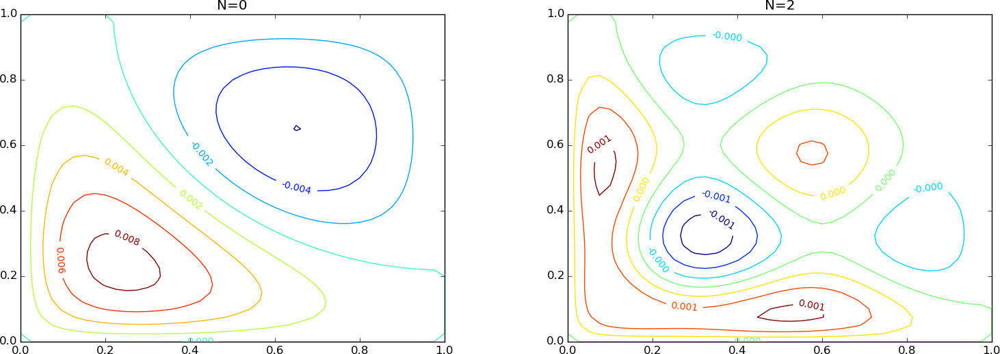
c)
Make a unit test for the least_squares_orth function.
Let us use the basis in b), fix the coefficients of some function \( f \), and check that the computed approximation, with the same basis, has the same coefficients (this test employs the principle that if \( f\in V \), then \( u=f \)).
def test_least_squares_orth():
# Use sine functions
x, y = sym.symbols('x y')
N = 2 # (N+1)**2 = 9 basis functions
psi = sine_basis(N, N)
f_coeff = [0]*len(psi)
f_coeff[3] = 2
f_coeff[4] = 3
f = sum(f_coeff[i]*psi[i] for i in range(len(psi)))
# Check that u exactly reproduces f
u, c = least_squares_orth(f, psi, Omega=[[0,1], [0,1]],
symbolic=False)
import numpy as np
diff = np.abs(np.array(c) - np.array(f_coeff)).max()
print 'diff:', diff
tol = 1E-15
assert diff < tol
Filename: approx2D_ls_orth.
Exercise 20: Use the Trapezoidal rule and P1 elements
Consider approximation of some \( f(x) \) on an interval \( \Omega \) using the least squares or Galerkin methods with P1 elements. Derive the element matrix and vector using the Trapezoidal rule (109) for calculating integrals on the reference element. Assemble the contributions, assuming a uniform cell partitioning, and show that the resulting linear system has the form \( c_i=f(\xno{i}) \) for \( i\in\If \).
The Trapezoidal rule for integrals on \( [-1,1] \) is given by (109). The expressions for the entries in the element matrix are given by (74) in the section Mapping to a reference element: $$ \begin{align*} \tilde A^{(e)}_{r,s} &= \int_{-1}^1 \refphi_r(X)\refphi_s(X)\det J\,\dX\\ &\approx \frac{h}{2}(\refphi_r(-1)\refphi_s(-1) + \refphi_r(1)\refphi_s(1))\tp \end{align*} $$ We know that if \( \refphi_r(\pm 1) \) is 0 or 1, so evaluating the formula above for \( r,s=0,1 \) gives $$ \tilde A^{(e)} = \frac{h}{2}\left(\begin{array}{cc} 1 & 0\\ 0 & 1 \end{array}\right)\tp$$ As usual, \( h \) is the length of the element in physical coordinates.
The element vector in the reference element is given by (75): $$ \begin{align*} \tilde b^{(e)}_{r} &= \int_{-1}^1 f(x(X))\refphi_r(X)\det J\,\dX\\ &\approx \frac{h}{2}(f(x(-1))\refphi_r(-1) + f(x(1))\refphi_r(1))\tp \end{align*} $$ Evaluating the formula for \( r=0,1 \) leads to $$ \tilde b^{(e)} = \frac{h}{2}\left(\begin{array}{c} f(x_L)\\ f(x_R) \end{array}\right),$$ where \( x_L \) and \( x_R \) are the \( x \) coordinates of the local points \( X=-1 \) and \( X=1 \), respectively.
With a uniform mesh with nodes \( \xno{i}=ih \), the element matrix and vectors assemble to a coefficient matrix $$ \frac{h}{2}\hbox{diag}(1, 2, \ldots, 2, 1),$$ and right-hand side vector $$ \frac{h}{2}(f(\xno{0}), 2f(\xno{1}), \ldots, 2f(\xno{N_n-1}), f(\xno{N_n}))\tp$$ The factors \( h/2 \) and \( 2 \) cancel, so we are left with the solution of the system as $$ c_i = f(\xno{i})\tp$$
Filename: fe_P1_trapez.
Exercise 21: Compare P1 elements and interpolation
We shall approximate the function $$ f(x) = 1 + \epsilon\sin (2\pi nx),\quad x\in \Omega = [0,1],$$ where \( n\in\Integer \) and \( \epsilon \geq 0 \).
a) Plot \( f(x) \) for \( n=1,2,3 \) and find the wave length of the function.
b) We want to use \( N_P \) elements per wave length. Show that the number of elements is then \( nN_P \).
c) The critical quantity for accuracy is the number of elements per wave length, not the element size in itself. It therefore suffices to study an \( f \) with just one wave length in \( \Omega = [0,1] \). Set \( \epsilon = 0.5 \).
Run the least squares or projection/Galerkin method for \( N_P=2,4,8,16,32 \). Compute the error \( E=||u-f||_{L^2} \).
Use the fe_approx1D_numint module to compute \( u \) and use
the technique from the section Computing the error of the approximation to
compute the norm of the error.
d) Repeat the set of experiments in the above point, but use interpolation/collocation based on the node points to compute \( u(x) \) (recall that \( c_i \) is now simply \( f(\xno{i}) \)). Compute the error \( E=||u-f||_{L^2} \). Which method seems to be most accurate?
Filename: fe_P1_vs_interp.
Exercise 22: Implement 3D computations with global basis functions
Extend the approx2D.py code to 3D applying ideas from the section Extension to 3D. Construct some 3D problem to make a test function for the implementation.
Drop symbolic integration since it is in general too slow for 3D problems.
Also use scipy.integrate.nquad instead of sympy.mpmath.quad
for numerical integration, since it is much faster.
We take a copy of approx2D.py and drop the comparison_plot function since
plotting in 3D is much more complicated (could make a special version with
curves through lines in the 3D domain, for instance).
Furthermore, we remove the lines with symbolic integration and replace
the calls to sym.mpmath.quad by calls to
scipy.integrate.nquad. The resulting function becomes
import sympy as sym
import numpy as np
import scipy.integrate
def least_squares(f, psi, Omega):
"""
Given a function f(x,y,z) on a rectangular domain
Omega=[[xmin,xmax],[ymin,ymax],[zmin,zmax]],
return the best approximation to f in the space V
spanned by the functions in the list psi.
f and psi are symbolic (sympy) expressions, but will
be converted to numeric functions for faster integration.
"""
N = len(psi) - 1
A = np.zeros((N+1, N+1))
b = np.zeros(N+1)
x, y, z = sym.symbols('x y z')
f = sym.lambdify([x, y, z], f, modules='numpy')
psi_sym = psi[:] # take a copy, needed for forming u later
psi = [sym.lambdify([x, y, z], psi[i]) for i in range(len(psi))]
print '...evaluating matrix...'
for i in range(N+1):
for j in range(i, N+1):
print '(%d,%d)' % (i, j)
integrand = lambda x, y, z: psi[i](x,y,z)*psi[j](x,y,z)
I, err = scipy.integrate.nquad(
integrand,
[[Omega[0][0], Omega[0][1]],
[Omega[1][0], Omega[1][1]],
[Omega[2][0], Omega[2][1]]])
A[i,j] = A[j,i] = I
integrand = lambda x, y, z: psi[i](x,y,z)*f(x,y,z)
I, err = scipy.integrate.nquad(
integrand,
[[Omega[0][0], Omega[0][1]],
[Omega[1][0], Omega[1][1]],
[Omega[2][0], Omega[2][1]]])
b[i] = I
print
c = np.linalg.solve(A, b)
if N <= 10:
print 'A:\n', A, '\nb:\n', b
print 'coeff:', c
u = sum(c[i]*psi_sym[i] for i in range(len(psi_sym)))
print 'approximation:', u
return u, c
As test example, we can use the basis $$ \baspsi_{p,q,r} = \sin((p+1)\pi x)\sin((q+1)\pi y)\sin((r+1)\pi z),$$ for \( p=1,\ldots,N_x \), \( q=1,\ldots,N_y \), \( r=1,\ldots,N_z \). We choose \( f \) as some prescribed combination of these functions and check that the computed \( u \) is exactly equal to \( f \).
def sine_basis(Nx, Ny, Nz):
"""
Compute basis sin((p+1)*pi*x)*sin((q+1)*pi*y)*sin((r+1)*pi*z),
p=0,...,Nx, q=0,...,Ny, r=0,...,Nz.
"""
x, y, z = sym.symbols('x y z')
psi = []
for r in range(0, Nz+1):
for q in range(0, Ny+1):
for p in range(0, Nx+1):
s = sym.sin((p+1)*sym.pi*x)*\
sym.sin((q+1)*sym.pi*y)*sym.sin((r+1)*sym.pi*z)
psi.append(s)
return psi
def test_least_squares():
# Use sine functions
x, y, z = sym.symbols('x y z')
N = 1 # (N+1)**3 = 8 basis functions
psi = sine_basis(N, N, N)
f_coeff = [0]*len(psi)
f_coeff[3] = 2
f_coeff[4] = 3
f = sum(f_coeff[i]*psi[i] for i in range(len(psi)))
# Check that u exactly reproduces f
u, c = least_squares(f, psi, Omega=[[0,1], [0,1], [0,1]])
diff = np.abs(np.array(c) - np.array(f_coeff)).max()
print 'diff:', diff
tol = 1E-15
assert diff < tol
Filename: approx3D.
Exercise 23: Use Simpson's rule and P2 elements
Redo Exercise 20: Use the Trapezoidal rule and P1 elements, but use P2 elements and Simpson's rule based on sampling the integrands at the nodes in the reference cell.
Simpson's rule for integrals on \( [-1,1] \) is given by (110). The expressions for the entries in the element matrix are given by (74): $$ \begin{align*} \tilde A^{(e)}_{r,s} &= \int_{-1}^1 \refphi_r(X)\refphi_s(X)\det J\,\dX\\ &\approx \frac{1}{3}\frac{h}{2}(\refphi_r(-1)\refphi_s(-1) + 4\refphi_r(0)\refphi_s(0) + \refphi_r(1)\refphi_s(1))\tp \end{align*} $$ The expressions for \( \refphi_r(X) \) are given by (76)-\eqref{fem:approx:fe:mapping:P1:phi2}. Evaluating the formula for \( r,s=0,1,2 \) gives the element matrix $$ \tilde A^{(e)} = \frac{h}{6}\left(\begin{array}{ccc} 1 & 0 & 0\\ 0 & 4 & 0\\ 0 & 0 & 1 \end{array}\right)\tp$$ As usual, \( h \) is the length of the element in physical coordinates.
The element vector in the reference element is given by (75): $$ \begin{align*} \tilde b^{(e)}_{r} &= \int_{-1}^1 f(x(X))\refphi_r(X)\det J\,\dX\\ &\approx \frac{1}{3}\frac{h}{2}(f(x(-1))\refphi_r(-1) + 4f(x(0))\refphi_r(0) + f(x(1))\refphi_r(1))\tp \end{align*} $$ Evaluating the formula for \( r=0,1,2 \) leads to $$ \tilde b^{(e)} = \frac{h}{2}\left(\begin{array}{c} f(x_L)\\ 4f(x_c) f(x_R) \end{array}\right),$$ where \( x_L \), \( x_c \), and \( x_R \) are the \( x \) coordinates of the local points \( X=-1 \), \( X=0 \), and \( X=1 \), respectively. These correspond to the nodes in the element.
With a uniform mesh with nodes \( \xno{i}=ih \), the element matrix and vectors assemble to a coefficient matrix $$ \frac{h}{6}\hbox{diag}(1, 4, 2, 4, 2, 4, \ldots, 2, 4, 1),$$ and right-hand side vector $$ \frac{h}{6}(f(\xno{0}), 4f(\xno{1}), 2f(\xno{2}), 4f(\xno{3}), 2f(\xno{4}), \ldots, 2f(\xno{N_n-2}), 4f(\xno{N_n-1}), f(\xno{N_n}))\tp$$ The factors \( h/6 \), \( 2 \) and \( 4 \) all cancel, so we are left with the solution of the system as $$ c_i = f(\xno{i})\tp$$
Filename: fe_P2_simpson.